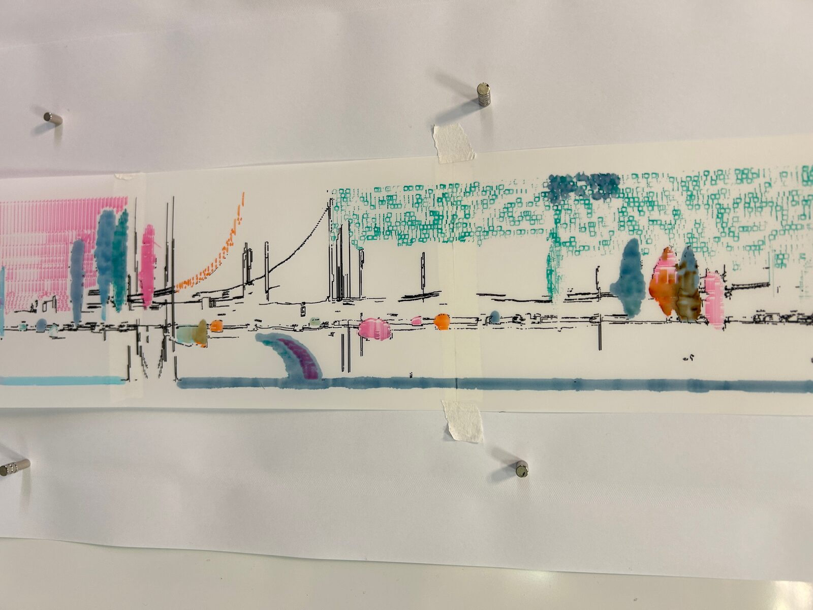
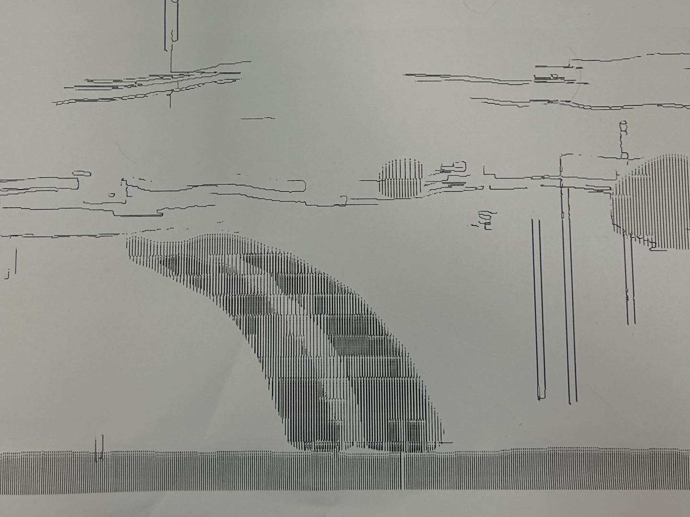
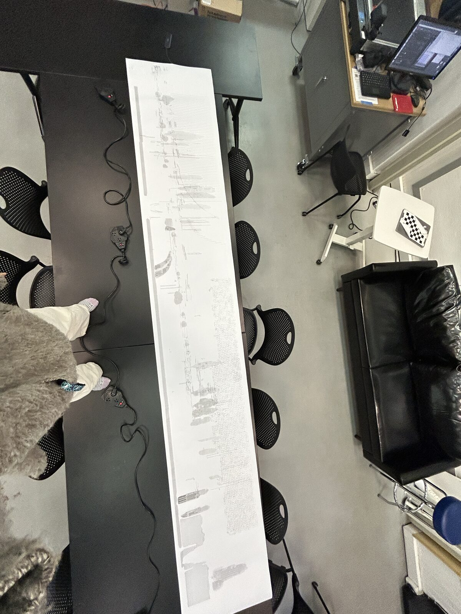
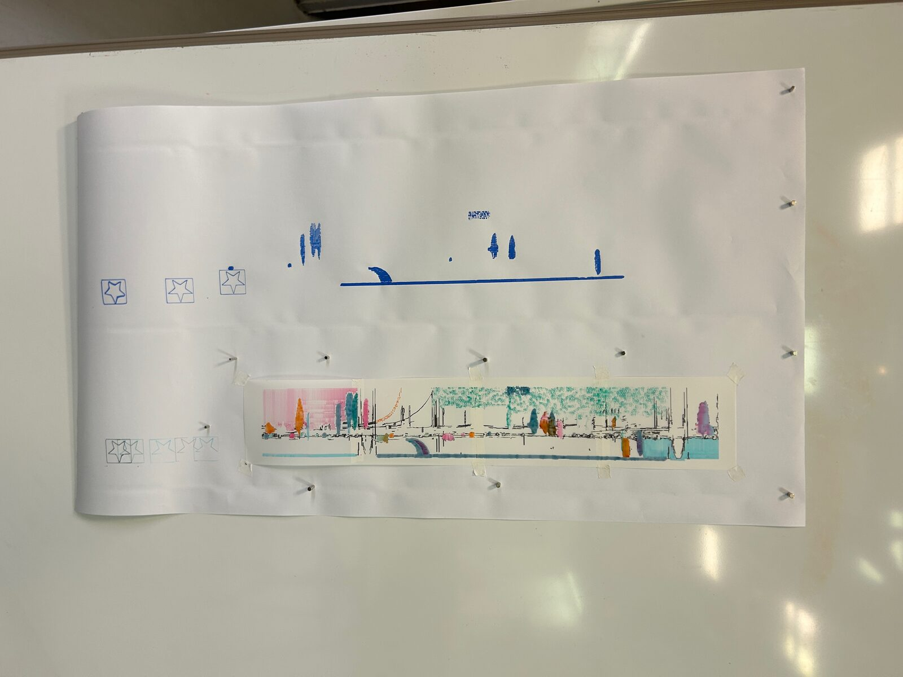
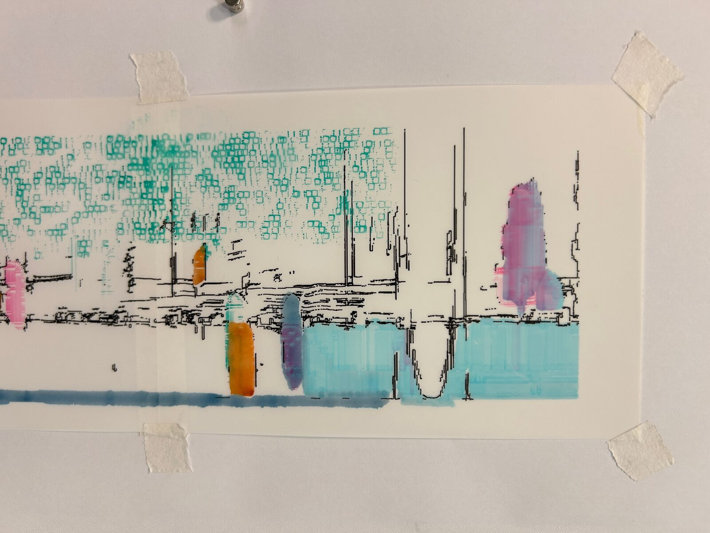
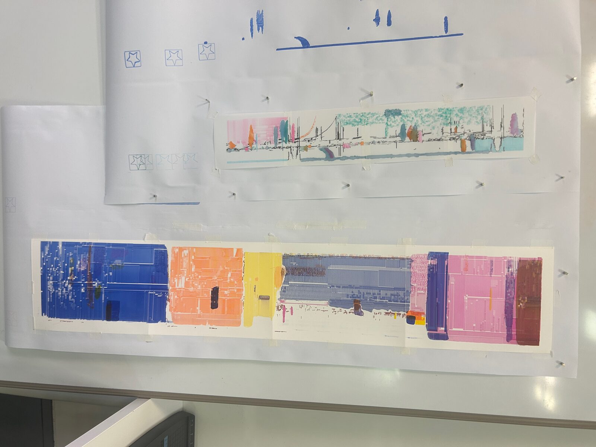
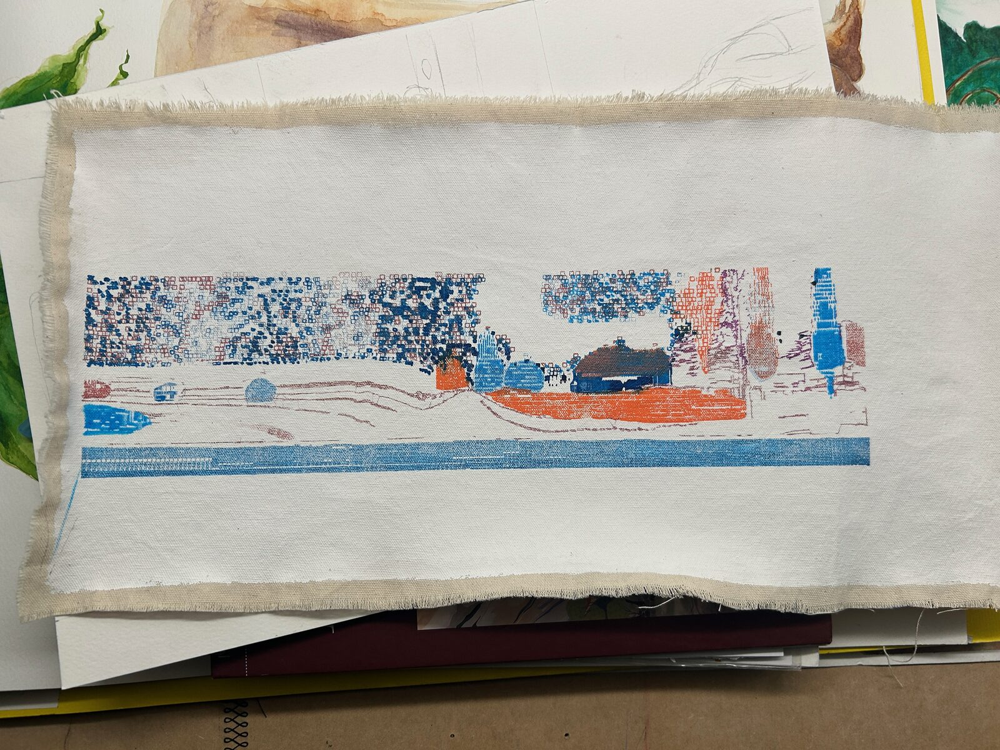
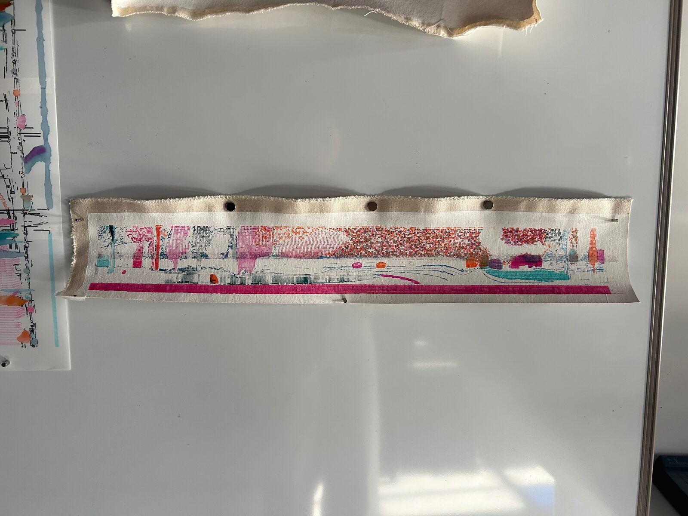

the looooooooong way home
Slit scans of long drives, plotted as scrolls on Yupo and canvas.

I’m drawn to Chinese ink painting, especially Wang Ximeng’s A Thousand Li of Rivers and Mountains, the Song dynasty handscroll that runs nearly twelve meters. What stays with me is liubai, the art of leaving white space, and the sense of vastness a long scroll has when you unroll it a section at a time.
My slit scans from the long way home already looked like that. A slit scan compresses a drive into one long band of time and space, and the shapes it makes are often strange and beautiful. They wanted to be scrolls, so I steered the dashcam project in that direction.
A vinyl cutter, repurposed
The only machine in Golan Levin’s Drawing with Machines studio that could plot at scroll length was the USCutter MH871-MK2, which is a vinyl cutter, not a plotter. Using it to draw means modifying it and learning its quirks.
The first tests failed in an obvious way. Thin paper couldn’t take repeated strokes in the same area, and the pen often ripped straight through it.


Surfaces
I tried raw and gessoed cotton canvas and several finishes of Yupo paper, alongside different pens and inks. To start, I taped small sheets of Yupo onto the cheap thin paper and plotted onto those, so I could learn how the machine behaved without wasting expensive material.


Finding the origin
The USCutter is 34 inches wide, with a reliable working width of about 30. To save canvas and Yupo, it’s best to stack several plots across that width. It also has only one pen holder, so every color is its own pass, and every pass has to start from the same place.
Multi-color scrolls only line up if you understand how the machine sets its origin, where a plot starts relative to it, and how to keep it fixed between layers. Once I worked that out, I could scale up.

Scaling up
The largest plot is 152 by 24 inches, more than twelve feet of drive unrolled across canvas.


Along the way, I wrote down everything that went wrong so the next person wouldn’t have to rediscover it: the laptop sleeping mid-plot, wrong rotation settings that mirror a drawing or push it off the page, thin paper tearing, and long plots corrupting when they pause. The guide lives on GitHub and builds on an earlier public write-up, which it credits.
USCutter MH871-MK2 plotting guide on GitHub ↗